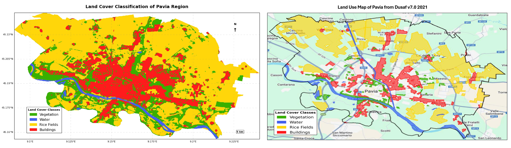

This project implements a land cover classification system for the Pavia region in Italy, utilizing a fusion of Sentinel-1 and Sentinel-2 satellite data within the Google Earth Engine platform. The system distinguishes between four primary land cover types: vegetation, water bodies, rice fields, and buildings. By leveraging the strengths of both Synthetic Aperture Radar (SAR) and optical data, this project demonstrates improved accuracy and robustness in land cover mapping.
This research is significant due to its multi-sensor approach, utilization of open-access data from the European Space Agency’s (ESA) Copernicus Program, efficient use of minimal training data, and its implementation on the Google Earth Engine platform, showcasing a scalable approach to processing and analyzing large volumes of satellite data.
The study focuses on the Pavia region in Italy, known for its diverse land cover types, including urban areas, agricultural lands (particularly rice fields), and water bodies.
This project employed two classifiers: Random Forest and Support Vector Machine (SVM).
Random Forest Classifier:
Support Vector Machine (SVM):

Left map displays the final land cover classification for the Pavia region, resulting from the integration of Sentinel-1 and Sentinel-2 data and the application of the Random Forest classifier.
The “Land Use Map of Pavia from Dusaf v7.0 2021” (Right) is a reference dataset used for validation in the land cover classification project. This dataset provides comprehensive land cover information for the Lombardy region, making it a reliable source for assessing the accuracy of the classification results. The project utilizes a stratified random sampling approach with equal distribution across the four land cover classes: vegetation, water bodies, rice fields, and buildings. This ensures a balanced and unbiased evaluation of the model’s performance.
---------------------------------------------------------
| Classifier | Overall Accuracy | Kappa Coefficient|
---------------------------------------------------------
| Random Forest | 81.33% | 0.75 |
| SVM | 25.83% | 0.010 |
---------------------------------------------------------
-------------------------------------------------------------------
| Class | Producer's Accuracy| User's Accuracy | F1-Score |
-------------------------------------------------------------------
| Vegetation | 62.67% | 73.15% | 0.68 |
| Water Bodies | 76.33% | 99.57% | 0.86 |
| Rice Fields | 97.67% | 79.84% | 0.88 |
| Buildings | 88.67% | 76.88% | 0.82 |
-------------------------------------------------------------------
The top 10 features by importance are NDWI, NDVI, B5, VH_norm, B4, VH, B3, VH_var, B2, and B12.
[192, 1, 50, 57]
[32, 229, 22, 17]
[4, 0, 293, 3]
[33, 0, 1, 266]
The Random Forest classifier significantly outperformed the SVM, likely due to its ability to handle high-dimensional data, robustness to overfitting, and its ensemble nature.
The high importance of NDWI and NDVI highlights their effectiveness in capturing vegetation and water characteristics.
Water bodies exhibited the highest user’s accuracy, indicating reliable water detection. Rice fields had the highest producer’s accuracy, suggesting effective identification of this crop type. Vegetation and buildings showed lower accuracies, potentially due to spectral similarities or mixed pixels.
Integrating Sentinel-1 and Sentinel-2 data improved classification accuracy compared to using optical data alone.
Using DUSAF v7.0 2021 with stratified random sampling ensures an independent and comprehensive accuracy assessment.
The project successfully demonstrated the potential of integrating Sentinel-1 and Sentinel-2 data for improved land cover classification in the Pavia region using Google Earth Engine.
Future work could explore advanced machine learning techniques, incorporate temporal features, extend the classification to more detailed classes, implement object-based classification, and investigate the model’s transferability to other regions.